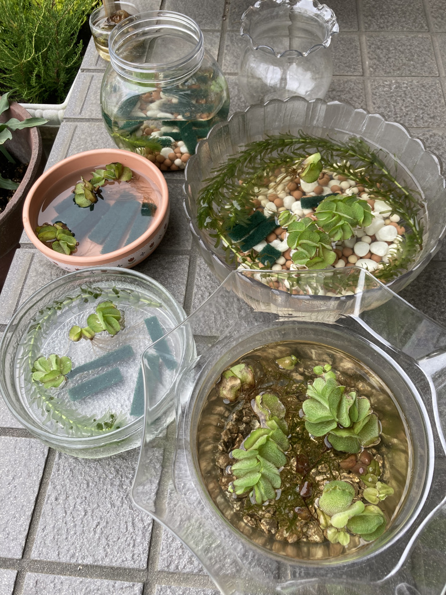

卵の孵化のさせ方
めだかの卵を確保しよう
卵を孵化させるには
調べると、
「毎日水を変えてください」と書いてあるものもあると思いますが、
私はめんどくさがり屋なので、以下の方法で落ち着きました。
- めだかを育てる環境と同じにする。
- 温かいところに置く
で、孵ります。
具体的に説明します。
- 卵を入れておく水はカルキ抜きをしてください。
- 晴れている日は外に置くなどして、卵の水温が低いままにならないようにしてください。
- 白くなってしまった卵はできるだけ取り除いてください。
以上です。
この方法だと水を頻繁に変えなくても稚魚が生まれます。

私はこんな感じで容器に入れています。
気づいたら稚魚が泳いでるって感じです。
卵が白く変色する
稚魚が生まれたら
稚魚が生まれて２〜３日は餌をやらなくでも大丈夫です。
生まれてすぐの稚魚はお腹に栄養をもっているので、
餌をあげなくてもそのお腹の栄養から栄養を取ります。
ちなみにご存知かと思いますが、
稚魚が１センチ以上になるまでは、大人のめだかと一緒に泳がせないでください。食われます。
以上、孵化のさせ方でした。